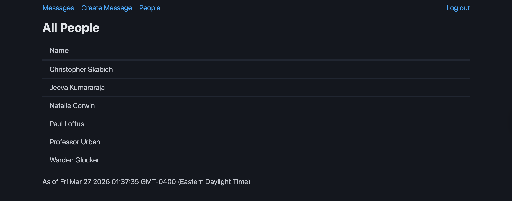
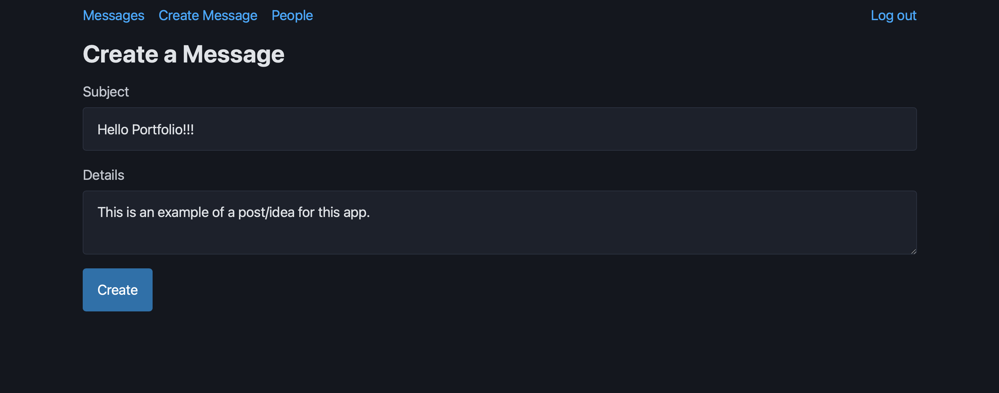
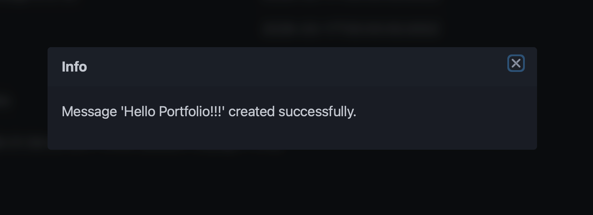
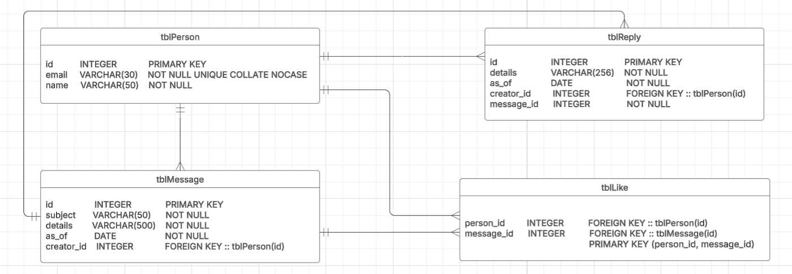
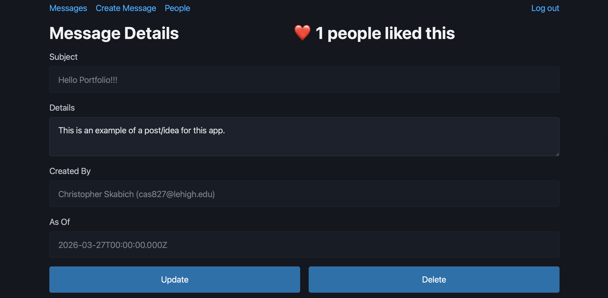
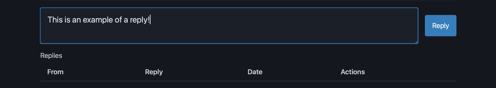

Foundation & Tutorials
Before diving into team-based version control, the project began with a guided tutorial phase to establish a baseline understanding of the full-stack architecture. This phase ensured all team members were comfortable with the core technologies before branching off into our specialized roles.
View Phase 0 Tutorial Documentation →Initial Architecture (Backend Role)
For the first official sprint, the workload was divided strictly into Agile roles. I served as the Backend Developer, responsible for setting up the core API routes, helping with designing the database schema, and ensuring the application could reliably handle user profiles and the creation of new idea posts.
1. User Directory (People List)
The foundational directory where employees can view their peers. I configured the backend routes to query the database and safely deliver this user data to the frontend.

2. Message Creation Interface
The core input component for the application. As the backend developer, I built the POST endpoints necessary to receive this form data, sanitize it, and store the author's ID and timestamp securely.

3. Main Message Log
The central feed displaying all user-submitted ideas. The backend serves this data efficiently, ordering messages chronologically to populate the feed upon page load.

Database Expansion (Admin Role)
In Phase 2, our main objective was expanding the application's functionality to include interactive "likes" and "replies." I took on the role of Admin, where my primary responsibility was overhauling the PostgreSQL database architecture to support this new relational data.
Entity-Relationship Diagram (ERD)
Before touching the live database, I designed an ERD to map out the complex relational logic between users, posts, comments, and likes. I then implemented these tables and migrations in PostgreSQL.

Expanded Main Feed
With the database updated, the frontend could now display enhanced data points on the main log, pulling relational "like" counts and tracking if messages had active threaded conversations.
Message Details & Interactions
A dedicated view for individual messages was added, allowing users to drill down into specific ideas and interact with the newly implemented data models.

Threaded Reply System
The final piece of Phase 2 was the reply system, requiring recursive backend logic to fetch comments linked to parent posts and display them as threaded conversations.

Profiles and Caching (Frontend Role)
We are currently in Phase 3, where I have transitioned to the Frontend Developer role. My focus is wiring up the frontend components to consume the backend endpoints we created in Phase 2, improving the UX, and fixing technical debt.
On top of the fixes that are needed, I will be working on adding a new item to our menu that allows the logged-in user to see their own profile. The user will be able to edit their profile and see their own private information. Another requirement for this phase is implementing a reporting system for inappropriate messages. I will be adding report buttons for this phase.
More to Come! 🚀
This project is actively in development. Stay tuned as we complete Phase 3 and move into the final stages. A polished, complete web application will be available at the end of the semester!